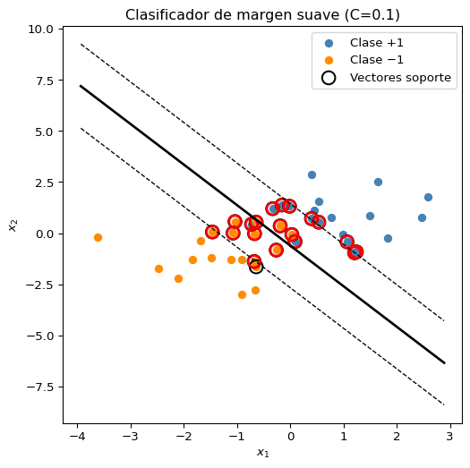
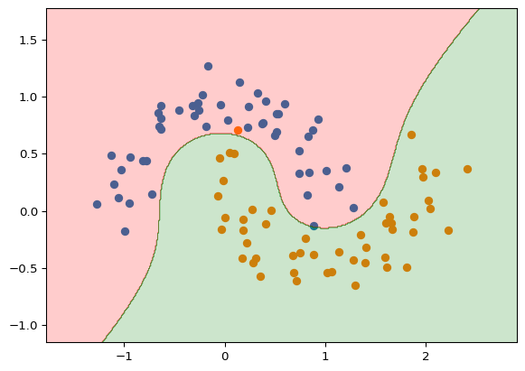
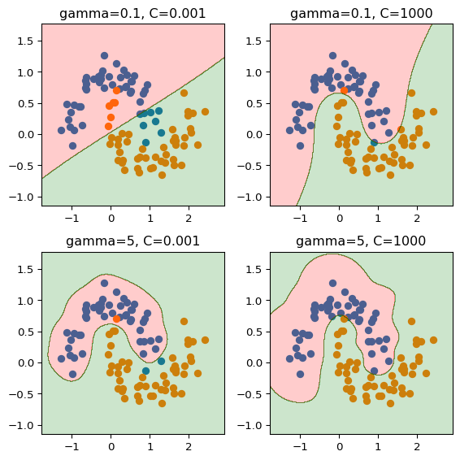
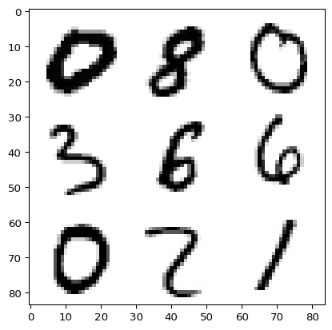
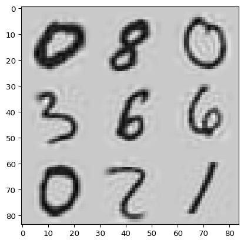
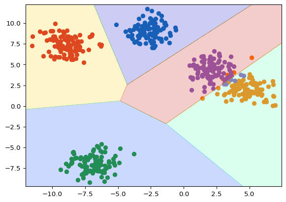
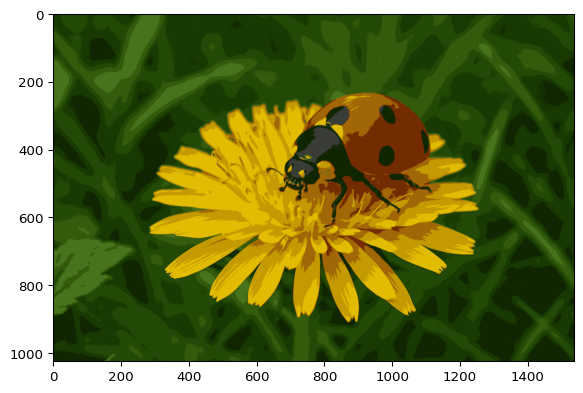
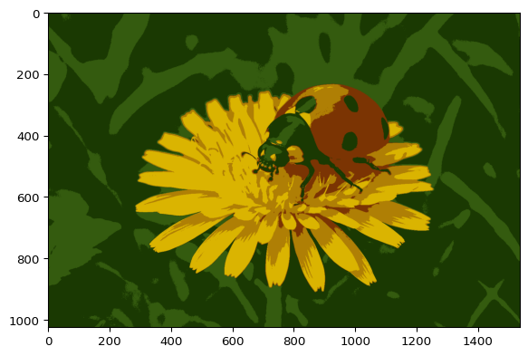

En esta clase vamos a ver otros algoritmos de aprendizaje automático que no son redes neuronales. Existe una vasta (y creciente) literatura sobre este tema y no vamos a poder cubrirla en esta asignatura. El estudiante puede tomar esta clase como motivación para explorar más a fondo el aprendizaje automático.
Máquinas de Vectores de Soporte (SVM)
Las máquinas de vectores de soporte (SVM) fueron desarrolladas en los años 90 y han ganado popularidad debido a su buen rendimiento en distintos contextos. Comenzaremos con el clasificador de margen máximo que es el más simple y funciona cuando las observaciones son linealmente separables (la frontera de decisión es un hiperplano sin solapamiento entre clases). Luego veremos el clasificador de vectores soporte que permite algunos solapamientos admitiendo violaciones del margen. Finalmente discutiremos cómo generalizar el clasificador de vectores soporte para problemas no lineales.
Clasificador de Margen Máximo
Este clasificador busca un hiperplano que separa las observaciones de las dos clases de manera que el margen (distancia mínima) entre el hiperplano y las observaciones más cercanas de cada clase sea lo más grande posible. Es decir, para cada punto de datos calculamos su distancia al hiperplano y el margen es la distancia mínima entre el hiperplano y las observaciones más cercanas de cada clase.
La optimización del hiperplano de margen máximo es:
En la Figura 1 se muestra el clasificador de margen máximo para un conjunto de datos sintéticos. Encerramos en círculos los puntos con la distancia mínima al hiperplano. Estos se llaman vectores de soporte. Los vectores soporte son las observaciones más cercanas al hiperplano y determinan su posición. Una particularidad de los vectores soporte es que si eliminamos todos los demás puntos, el hiperplano no cambia. Es decir, el hiperplano es invariante a la eliminación de puntos no soporte.
El clasificador de margen máximo tiene una gran varianza porque la frontera de decisión es muy sensible a pequeños cambios en los vectores de soporte.
Clasificador de Vectores Soporte
El clasificador de vectores soporte (clasificador de margen suave) permite algunas violaciones del margen. Para ello, se introduce un parámetro \(C\) que controla la compensación entre el ancho del margen y las violaciones del margen. Se puede ver como un presupuesto para el número de violaciones del margen.
En la Figura 2 se muestra el clasificador de margen suave para un conjunto de datos sintéticos. Vemos que el margen es más ancho y permite algunas violaciones del margen.
Código
import numpy as npimport matplotlib.pyplot as pltfrom sklearn import svm# ---------------------------# 1. Datos sintéticos con solapamiento# ---------------------------np.random.seed(42)X_pos = np.random.randn(20, 2) + [1, 1] # clase +1X_neg = np.random.randn(20, 2) + [-1, -1] # clase −1X = np.vstack([X_pos, X_neg])y = np.hstack([np.ones(20), -np.ones(20)])# ---------------------------# 2. Entrenamiento SVM con margen suave# (C pequeño permite más violaciones)# CUIDADO: El parámetro C de esta clase es el inverso del # introducido en la ecuación (ver advertencia)# ---------------------------clf = svm.SVC(kernel="linear", C=0.1) # C pequeño = margen suaveclf.fit(X, y)w = clf.coef_[0] # vector normal al hiperplanob = clf.intercept_[0] # término independientesv = clf.support_vectors_ # vectores soporte# ---------------------------# 3. Gráfica# ---------------------------fig, ax = plt.subplots(figsize=(6, 6))# Puntosax.scatter(X_pos[:, 0], X_pos[:, 1], color="steelblue", label="Clase +1")ax.scatter(X_neg[:, 0], X_neg[:, 1], color="darkorange", label="Clase −1")# Vectores soporteax.scatter(sv[:, 0], sv[:, 1], s=120, facecolors="none", edgecolors="black", linewidths=1.5, label="Vectores soporte")# Recta de decisión y márgenesxx = np.linspace(*ax.get_xlim(), 400)yy =-(w[0] * xx + b) / w[1]margin =1/ np.linalg.norm(w)yy_up = yy + w[0] / w[1] * marginyy_down = yy - w[0] / w[1] * marginax.plot(xx, yy, "k-", linewidth=2)ax.plot(xx, yy_up, "k--", linewidth=1)ax.plot(xx, yy_down, "k--", linewidth=1)# Resaltar puntos que violan el margenfor i inrange(len(X)):if clf.decision_function([X[i]])[0] * y[i] <1: ax.scatter(X[i, 0], X[i, 1], s=100, facecolors="none", edgecolors="red", linewidths=2)ax.set_xlabel("$x_1$")ax.set_ylabel("$x_2$")ax.set_title("Clasificador de margen suave (C=0.1)")ax.legend()plt.show()

Figura 2: Clasificador de margen suave con violaciones
El parámetro \(C\) controla la compensación entre sesgo y varianza del modelo.
Si \(C\) es pequeño, cada vez que un punto se mete en la calle (o queda mal clasificado) el costo en la función objetivo es alto; el algoritmo prefiere reducir el margen y mover la recta para sacar a todos los puntos de la calle. El modelo se ajusta muy bien a los datos de entrenamiento (bajo sesgo) pero pequeños cambios en los datos alteran mucho la frontera (alta varianza).
Si \(C\) es grande, las violaciones casi no “cuentan”: el optimizador puede aceptar que algunos puntos queden dentro o incluso al otro lado de la calle con tal de ensanchar el margen. Esto actúa como regularización: la frontera depende menos de detalles locales (menor varianza), pero al ser más rígida puede no capturar complejidades reales del dato (mayor sesgo).
En otras palabras, \(C\) controla cuán caro es equivocarse: caro = modelo flexible que busca cero errores; barato = modelo moderado que sacrifica exactitud para ganar robustez.
Advertencia
En scikit-learn, el parámetro C está definido de manera inversa a como lo hemos definido en estas notas. En scikit-learn, un valor grande de C corresponde a un margen más estrecho y menos violaciones, mientras que un valor pequeño de C corresponde a un margen más ancho y más violaciones. Es decir, el C de scikit-learn es aproximadamente inversamente proporcional al \(C\) definido en estas notas.
Máquinas de Vectores de Soporte (SVM) no lineales
Las Máquinas de Vectores de Soporte (SVM) extienden el clasificador de vectores soporte usando núcleos (kernels) para manejar problemas de clasificación no lineales.
Para límites no lineales, el espacio de características se amplía con funciones de los predictores (por ejemplo, términos cuadráticos).
Código
from sklearn.datasets import make_moonsfrom sklearn.preprocessing import PolynomialFeaturesfrom sklearn.pipeline import make_pipelinefrom sklearn.preprocessing import StandardScalerfrom sklearn.svm import LinearSVCfrom matplotlib.colors import ListedColormapX, y = make_moons(n_samples=100, noise=0.15, random_state=42)polynomial_svm_clf = make_pipeline( PolynomialFeatures(degree=3), StandardScaler(), LinearSVC(C=10, max_iter=10_000, random_state=42))polynomial_svm_clf.fit(X, y)plt.scatter(X[y==0,0], X[y==0,1])plt.scatter(X[y==1,0], X[y==1,1])# Create a mesh grid for plotting the decision boundaryx_min, x_max = X[:, 0].min() -0.5, X[:, 0].max() +0.5y_min, y_max = X[:, 1].min() -0.5, X[:, 1].max() +0.5xx, yy = np.meshgrid(np.arange(x_min, x_max, 0.01), np.arange(y_min, y_max, 0.01))# Predict the class of each point on the mesh gridZ = polynomial_svm_clf.predict(np.c_[xx.ravel(), yy.ravel()])# Reshape Z to a 2D arrayZ = Z.reshape(xx.shape)# Create a colormap for plotting the decision boundarycmap = ListedColormap(['red', 'green'])# Plot the decision boundaryplt.contourf(xx, yy, Z, cmap=cmap, alpha=0.2)

Figura 3: SVM no lineal
En la Figura 3 se muestra el límite de decisión de una SVM con un núcleo polinomial de grado 3. Esto agrega términos cuadráticos y cúbicos a la frontera de decisión. En dos dimensiones, esto funciona bien, pero en dimensiones más altas el número de términos polinomiales crece muy rápidamente. Por ejemplo, en 10 dimensiones, hay \(\binom{10}{2} = 45\) términos cuadráticos y \(\binom{10}{3} = 240\) términos cúbicos.
Truco del núcleo (kernel trick)
El truco del núcleo es una técnica matemática que permite a las Máquinas de Vectores de Soporte trabajar eficientemente en espacios de alta dimensión sin tener que calcular explícitamente las transformaciones de los datos. En lugar de transformar los datos a un espacio de mayor dimensión y luego calcular el producto punto (lo cual sería computacionalmente costoso), el truco del núcleo permite calcular directamente el producto punto en el espacio transformado.
La idea clave es que las Máquinas de Vectores de Soporte solo necesitan calcular productos punto entre los datos. El truco del núcleo permite calcular estos productos punto en el espacio transformado sin tener que conocer la transformación explícita.
Por ejemplo, consideremos el núcleo polinómico de grado 2:
\[
K(x, z) = (1 + x^T z)^2
\]
Para datos en \(\mathbb{R}^2\), este núcleo corresponde a una transformación \(\phi\) que mapea los datos a un espacio de 6 dimensiones:
El truco del núcleo permite calcular \(K(x, z) = \phi(x)^T \phi(z)\) sin tener que calcular explícitamente \(\phi(x)\) y \(\phi(z)\). Esto es especialmente útil cuando la dimensión del espacio transformado es muy grande o incluso infinita.
El núcleo radial es particularmente interesante porque corresponde a una transformación a un espacio de dimensión infinita, lo que sería imposible de calcular explícitamente. Sin embargo, gracias al truco del núcleo, podemos trabajar con este espacio de manera eficiente. Tiene la forma de una Gaussiana, donde \(\gamma\) controla la varianza de la Gaussiana. Es decir, para \(\gamma\) grande la campana es estrecha y para \(\gamma\) pequeño la campana es más amplia. Cuando la campana es estrecha, cada punto es afectado por puntos cercanos, tal que la influencia de cada punto se vuelve más local. Esto hace que la frontera de decisión sea más ondulada y el modelo sea más flexible pero también más susceptible a sobreajuste. Por el contrario, cuando la campana es más amplia, cada punto es afectado por más puntos, lo que hace que la frontera de decisión sea más rígida y menos susceptible a sobreajuste pero con un mayor sesgo.
La función de decisión de las Máquinas de Vectores de Soporte con núcleo \(K\) es:
Esto es equivalente al hiperplano \(\beta_0 + \sum_{j=1}^{p} \beta_j \phi_j(x) = 0\) en el espacio de características transformado.
Como antes, solo los vectores soporte (observaciones cercanas al margen o que lo violan) afectan el límite de decisión.
En pocas palabras, el núcleo o kernel es equivalente a calcular el producto punto en un espacio de dimensión elevada. Este producto se usa en lugar de calcular la transformación explícita. No lo demostramos aquí por falta de tiempo, pero el producto punto es lo único que se necesita para calcular el límite de decisión.
Código
from sklearn.svm import SVCdef plot_regions_rbf_example(gamma, C, ax):# Train the classifier rbf_kernel_svm_clf = make_pipeline(StandardScaler(), SVC(kernel="rbf", gamma=gamma, C=C)) rbf_kernel_svm_clf.fit(X, y) ax.scatter(X[y==0,0], X[y==0,1]) ax.scatter(X[y==1,0], X[y==1,1])# Create a mesh grid for plotting the decision boundary x_min, x_max = X[:, 0].min() -0.5, X[:, 0].max() +0.5 y_min, y_max = X[:, 1].min() -0.5, X[:, 1].max() +0.5 xx, yy = np.meshgrid(np.arange(x_min, x_max, 0.01), np.arange(y_min, y_max, 0.01))# Predict the class of each point on the mesh grid Z = rbf_kernel_svm_clf.predict(np.c_[xx.ravel(), yy.ravel()])# Reshape Z to a 2D array Z = Z.reshape(xx.shape)# Create a colormap for plotting the decision boundary cmap = ListedColormap(['red', 'green'])# Plot the decision boundary ax.contourf(xx, yy, Z, cmap=cmap, alpha=0.2) ax.set_title(f'gamma={gamma}, C={C}')# Create a 2x2 grid of plotsfig, axes = plt.subplots(2, 2, figsize=(6, 6))# Define the parameter combinationsparams = [ (0.1, 0.001), (0.1, 1000), (5, 0.001), (5, 1000)]# Plot each combinationfor (gamma, C), ax inzip(params, axes.ravel()): plot_regions_rbf_example(gamma, C, ax)plt.tight_layout()plt.show()

Figura 4: SVM con núcleo radial
En la Figura 4 se muestra el límite de decisión de un SVM con núcleo radial para diferentes valores de \(C\) y \(\gamma\). Para valores pequeños de \(C\) se permiten muchas violaciones del margen. Para valores grandes de \(C\) se permiten pocas violaciones del margen pero se puede terminar en sobreajuste. Al aumentar \(\gamma\) la campana Gaussiana se hace más estrecha. La influencia de cada instancia se vuelve más local, lo que lleva a una frontera más ondulada. Si el modelo sobreajusta, reduce \(\gamma\) y viceversa.
SVM multiclase
Las SVM definen una frontera de decisión para separar dos clases. Cuando tenemos más de dos clases, podemos intentar las siguientes estrategias:
Uno contra uno: Para cada pareja de clases se construye una SVM. En total se construyen \(\binom{K}{2}\) SVM para clasificación con \(K\) clases. Cada punto se asigna a la clase que ocurre más veces en esas comparaciones. Cada SVM usa pocos puntos ya que solo se usan las observaciones de las dos clases que se están separando. Sin embargo, el número de SVMs crece rápidamente con \(K\), lo que puede llevar a predicciones lentas (necesita clasificar muchas veces y tomar la más frecuente).
Uno contra todos: Para cada clase, se construye una SVM que determina la frontera entre esa clase y todas las demás. Se construyen \(K\) SVM, cada una frente a todas las demás. Cada punto se asigna a la clase que ocurre más veces en esas comparaciones. Sin embargo puede tener problemas cuando alguna clase se solapa con otras varias.
Aprendizaje no supervisado
El aprendizaje no supervisado es una técnica de aprendizaje automático que busca encontrar patrones en los datos sin tener una respuesta previa. Estudiaremos dos de los algoritmos más populares de aprendizaje no supervisado: el clustering y el reducción de dimensionalidad. En cada uno introduciremos los algoritmos más básicos. Motivamos al estudiante a explorar por su cuenta más a fondo el aprendizaje no supervisado, que es una rama de investigación muy activa.
Análisis de componentes principales (PCA)
El análisis de componentes principales (PCA) es una técnica de aprendizaje no supervisado utilizada para simplificar conjuntos de datos correlacionados de alta dimensión, reduciendo su dimensionalidad mientras se conserva la mayor cantidad posible de varianza. PCA identifica las direcciones (componentes principales) a lo largo de las cuales los datos varían más y proyecta los datos originales sobre estas direcciones.
Definición de los Componentes Principales
La intuición es la siguiente: La matriz de covarianza contiene la varianza de cada variable y su correlación con otras variables. Es una matriz simétrica, es decir, \(\boldsymbol{\Sigma}_{ij} = \boldsymbol{\Sigma}_{ji}\). Por lo tanto, siempre es posible diagonalizarla. Esto quiere decir que podemos encontrar autovectores y autovalores de la matriz de covarianza. Estos autovectores son ortogonales entre ellos, en otras palabras, si cambianos la lista de variables \(\{x_1, ..., x_q\}\) por una lista de autovectores \(\{\phi_1, ..., \phi_q\}\), la matriz de covarianza de estos será diagonal. Esto es equivalente a cambiar de variables en el espacio de parámetros para obtener nuevas variables no correlacionadas.
Los componentes principales se definen a través de los autovectores de la matriz de covarianza. En los datos esta es \(\mathbf{X}^T\mathbf{X}\), donde la componente \(X_{ij}\) como siempre se refiere a la medición \(i\), variable \(j\) (cada fila es una medición y cada columna es una variable).
El primer vector de componentes principales, \(\boldsymbol{\phi}_1\), es el autovector de \(\mathbf{X}^T\mathbf{X}\) asociado al mayor autovalor. Representa la dirección en el espacio de características a lo largo de la cual los datos varían más. Es decir, la dirección en la que hay más información.
Formalmente, el primer componente principal se expresa como:
siendo \(\lambda_1\) el mayor autovalor. Al ser un autovector, \(\boldsymbol{\phi}_1\) está definido salvo una constante multiplicativa.
El siguiente componente principal \(\boldsymbol{\phi}_2\) es el autovector asociado al siguiente autovalor más grande, y así sucesivamente. El autovalor de la matriz de covarianza representa la varianza de los datos en esa dirección. Escogemos los \(m\) autovectores de mayor autovalor para que los componentes principales expliquen la mayor variabilidad posible de los datos.
Los autovectores de una matriz simétrica son ortogonales entre sí, es decir, \(\boldsymbol{\phi}_i^T\boldsymbol{\phi}_j = 0\) para \(i \neq j\). Por lo tanto, los componentes principales no están correlacionados entre sí.
En este sentido, el PCA con \(m\) componentes busca las \(m\) direcciones no correlacionadas que explican la mayor variabilidad posible de los datos.
Proporción de Varianza Explicada (PVE)
La proporción de varianza explicada por cada componente principal está dada por:
La PVE ayuda a determinar cuántos componentes representan suficientemente los datos. Típicamente, se seleccionan componentes hasta que se observa un “codo” en el gráfico de scree.
Consideraciones Prácticas
Escalado de las Variables
Generalmente, las variables requieren ser escaladas a varianza unitaria, especialmente si están medidas en distintas escalas, para asegurar que ninguna variable influya desproporcionadamente en el PCA.
Unicidad
Los componentes principales son únicos salvo un cambio de signo. Por lo tanto, los resultados de diferentes paquetes de software pueden diferir en los signos pero representarán las mismas direcciones en el espacio de características.
Selección del Número de Componentes
Determinar el número de componentes principales es generalmente subjetivo. Prácticas comunes incluyen:
Inspeccionar gráficos de scree para encontrar un “codo”. Es decir, graficamos \(\text{PVE}_i\) para \(i=1,\dots,q\). La cantidad de varianza explicada subirá a medida que agregamos más componentes, pero llegará un punto donde ganaremos poco al agregar el siguiente. A esto se lo llama el “codo”.
Elegir suficientes componentes para capturar una proporción acumulada significativa de varianza. Por ejemplo, si queremos capturar el 95% de la varianza, usamos \(\sum_{i=1}^{m} \text{PVE}_i \geq 0.95\).
En contextos supervisados, el número de componentes puede seleccionarse mediante validación cruzada.
Usos Adicionales del PCA
Más allá de la visualización y la reducción de dimensionalidad, PCA puede utilizarse para:
Preprocesamiento de datos para regresión o clasificación.
Imputación de datos faltantes, es decir, completar valores faltantes en la matrix de datos \(\mathbf{X}\).
Mejorar la estabilidad y reducir el ruido en varios métodos analíticos.
Ejemplo de PCA para compresión de imágenes
En este ejemplo, usamos PCA para comprimir una imagen de un dígito escrito a mano. Usamos los datos de dígitos del paquete sklearn.
Código
from sklearn.datasets import fetch_openmlmnist = fetch_openml('mnist_784', as_frame=False)X_train, y_train = mnist.data[:60_000], mnist.target[:60_000]X_test, y_test = mnist.data[60_000:], mnist.target[60_000:]indexes = np.random.random_integers(0, len(X_train), 9)sample = X_train[indexes].reshape(3,3,28,28)plt.imshow(np.block([[sample[i,j] for i inrange(3)] for j inrange(3)]), cmap='gray_r')
/tmp/ipykernel_113981/122722974.py:7: DeprecationWarning: This function is deprecated. Please call randint(0, 60000 + 1) instead
indexes = np.random.random_integers(0, len(X_train), 9)

Figura 5: Dígitos de MNIST
En scikit-learn, el PCA se puede aplicar con la clase PCA del módulo decomposition. Podemos especificar que el número de componentes principales explique una proporción de la varianza. Pediremos el 95% de la varianza.
Código
from sklearn.decomposition import PCApca = PCA(n_components=0.95)X_reduced = pca.fit_transform(X_train)X_recovered = pca.inverse_transform(X_reduced)sample = X_recovered[indexes].reshape(3,3,28,28)plt.imshow(np.block([[sample[i,j] for i inrange(3)] for j inrange(3)]), cmap='gray_r')

Figura 6: PCA para compresión de imágenes
Métodos de Clustering
Introducción
El clustering es un conjunto amplio de técnicas para encontrar subgrupos (clusters) en un conjunto de datos. El objetivo es dividir las observaciones en grupos distintos de tal manera que las observaciones dentro de un mismo grupo sean similares entre sí y diferentes a las de otros grupos. La definición de similitud o diferencia depende del contexto y del tipo específico de datos.
Aunque tanto el clustering como PCA buscan simplificar datos, sus mecanismos son diferentes:
PCA busca una representación de baja dimensión que explique gran parte de la varianza.
Clustering busca subgrupos homogéneos entre las observaciones.
Clustering K-means
El clustering K-means es un método sencillo para particionar un conjunto de datos en \(K\) clusters distintos y no superpuestos. Es necesario especificar previamente el número \(K\) de clusters.
Dado un conjunto de observaciones $ x_{ij} $, se busca minimizar la variación intra-cluster:
donde \(C_k\) representa el conjunto de índices de las observaciones en el cluster \(k\).
Algoritmo K-means
Asignar aleatoriamente cada observación a uno de los \(K\) clusters.
Iterar hasta que las asignaciones no cambien:
Calcular el centroide de cada cluster (vector promedio).
Reasignar cada observación al cluster cuyo centroide esté más cerca (en términos de distancia euclidiana).
El resultado es una solución óptima local (puede no encontrar la solución óptima global), por lo que conviene repetir el algoritmo múltiples veces desde diferentes inicializaciones aleatorias.
El paso 1 es crucial para el resultado final. Si se elige mal, el algoritmo puede converger a un resultado subóptimo. Existen varias estrategias que mejoran la elección inicial. Por ejemplo, se puede elegir el centroide inicial como el punto más alejado de los centroides de los clusters ya existentes, que es lo que hace el algoritmo KMeans++ implementado en sklearn por defecto cuando se usa el método KMeans.
Elección de la medida de disimilitud
La distancia euclidiana es común, pero pueden preferirse otras medidas como la basada en correlación, que considera similares aquellas observaciones con perfiles correlacionados, independientemente de sus magnitudes absolutas.
Cuestiones prácticas
Escalado: Se recomienda escalar las variables a desviación estándar uno, especialmente cuando están medidas en escalas distintas. Esto es porque la distancia es sensible a la escala de las variables.
Robustez: Los resultados del clustering pueden ser sensibles a decisiones como tipo de vínculo, escalado y selección del número de clusters. Por lo tanto, es recomendable evaluar la robustez del clustering mediante diferentes configuraciones y subconjuntos del conjunto de datos.
Ejemplo de clustering K-means
Código
from sklearn.cluster import KMeansfrom sklearn.datasets import make_blobsk =5X, y = make_blobs(n_samples=500, centers=k, n_features=2, random_state=42)# make the blobs: y contains the cluster IDs, but we# will not use them; that's what we want to predictkmeans = KMeans(n_clusters=k, random_state=42)y_pred = kmeans.fit_predict(X)plt.scatter(X[y==0,0], X[y==0,1])plt.scatter(X[y==1,0], X[y==1,1])plt.scatter(X[y==2,0], X[y==2,1])plt.scatter(X[y==3,0], X[y==3,1])plt.scatter(X[y==4,0], X[y==4,1])# Create a mesh grid for plotting the decision boundaryx_min, x_max = X[:, 0].min() -0.5, X[:, 0].max() +0.5y_min, y_max = X[:, 1].min() -0.5, X[:, 1].max() +0.5xx, yy = np.meshgrid(np.arange(x_min, x_max, 0.01), np.arange(y_min, y_max, 0.01))# Predict the class of each point on the mesh gridZ = kmeans.predict(np.c_[xx.ravel(), yy.ravel()])# Reshape Z to a 2D arrayZ = Z.reshape(xx.shape)# Create a colormap for plotting the decision boundary#cmap = ListedColormap(['red', 'green', 'blue', 'yellow', 'gray'])# Plot the decision boundaryplt.contourf(xx, yy, Z, cmap='jet', alpha=0.2)

Figura 7: Clustering K-means para datos ficticios
En la figura Figura 7 se muestra el resultado del clustering K-means para datos ficticios. Vemos que funciona bien para este caso.
Ejemplo de clustering para segmentación de imágenes
Ahora queremos segmentar imágenes. Es decir, queremos agrupar píxeles similares entre sí. Esto ocurre frecuentemente en física, donde podemos tener imágenes de un experimento y nos gustaría identificar objetos o regiones. Nuestro ejemplo será reducir los colores de una imagen. Cada píxel tiene un color, que es un vector de tres componentes (rojo, verde, azul). Queremos agrupar píxeles similares entre sí en el espacio de colores.
Figura 8: Imagen de muestra que queremos segmentar
En la figura Figura 8 se muestra una imagen de muestra que queremos segmentar.
Código
def cluster_image(n_clusters): X = image.reshape(-1, 3) # Convertir en tres matrices, una por color kmeans = KMeans(n_clusters=n_clusters, random_state=42).fit(X) # entrenar un clustering k-medias img_segmentada = kmeans.cluster_centers_[kmeans.labels_] # reemplazar cada píxel por su etiqueta de cluster img_segmentada = img_segmentada.reshape(image.shape).astype(int) # convertir de nuevo en una imagen plt.imshow(img_segmentada)cluster_image(10)

Figura 9: Imagen segmentada en 10 clusters, coloreada con los centroides de los clusters
En la figura Figura 9 se muestra el resultado del clustering K-means para la imagen de la figura Figura 8. Cada cluster se colorea con el color del centroide, es decir, con el color del punto central del cluster. Hagámoslo para menos clusters
Código
cluster_image(5)

Figura 10: Imagen segmentada en 5 clusters, coloreada con los centroides de los clusters
En la figura Figura 10 se muestra el resultado del clustering K-means para la imagen de la figura Figura 8 con 5 clusters.
Ejercicios Sugeridos Para la Prueba
9.2, 9.3, 12.3
Suponga que ajustamos un conjunto de datos con un modelo SVM y obtenemos un sobreajuste. ¿Qué puede hacer para reducir el sobreajuste?
Suponga que realizamos un PCA de un conjunto de datos y obtenemos que el primer componente principal explica el 95% de la varianza. ¿Qué significa esto?